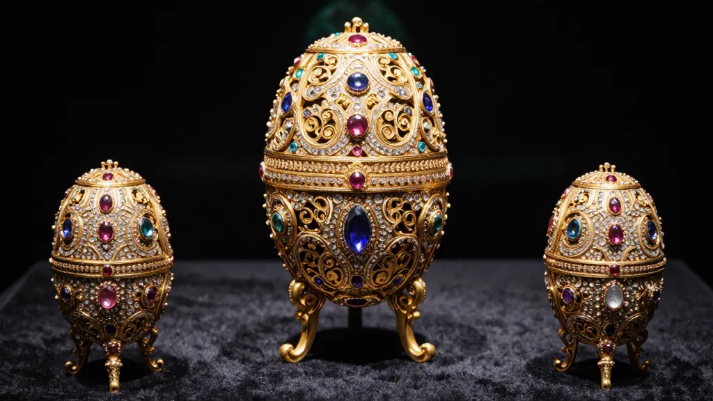

The Lost Fabergé Eggs: Six Imperial Treasures Still Waiting to Be Found

A gold egg on a kitchen counter
About 2012, a man in the American Midwest typed some words into a search engine. They were the words written on a watch. The watch was hidden inside a heavy gold egg that he owned.
He was a scrap dealer. Probably around 2004, he had bought the egg at a market for about $14,000. He planned to sell it for the value of its gold, at a small profit. But he could not find a buyer who would pay enough, so he put the egg aside.
Now his search showed him stories about a missing Fabergé egg. It looked a lot like the one in his home. In time, the world learned that his egg was worth tens of millions of dollars. One estimate was $33 million. Let us find out how such a treasure could be lost, and who made it.
An Easter gift for a tsarina
The story begins with the Romanovs. This royal family ruled Russia for over three centuries. In the Russian Orthodox faith, an egg stands for resurrection and new life. So giving eggs at Easter was an old custom.
In 1885, Tsar Alexander III asked the House of Fabergé to make a special Easter egg. It was one of the best jewellery firms in Saint Petersburg. The gift was for his wife, Tsarina Maria Fedorovna.
The result was the Hen Egg. It looked like a plain white enamel egg. It opened to show a gold yolk. Inside the yolk was a small gold hen with ruby eyes. The hen hid a tiny imperial crown and a small ruby pendant.
The Tsarina was delighted. So a new tradition was born, and it lasted over thirty years. Each Easter, the Tsar ordered a new egg. Alexander died in 1894, and his son Nicholas II kept the tradition going. He gave eggs to both his mother and his wife, Alexandra Fedorovna.
In all, the House of Fabergé made 50 Imperial Easter eggs between 1885 and 1917. And every one of them held a surprise.
Surprises inside the shell
No two eggs were alike. Each was a masterpiece of goldsmithing, enameling, and clever machinery. A team of master craftsmen worked in gold, silver, enamel, diamonds, rubies, and sapphires. They worked in strict secrecy, so that the surprises would delight the imperial family.
The Trans-Siberian Railway Egg of 1900 marked the completion of the railway across Russia. Inside was a working miniature gold train. You could wind it up and set it running.
The Coronation Egg of 1897 marked the coronation of Nicholas II. It held an exact small copy of the imperial coronation carriage. The doors worked, and the wheels turned.
The Winter Egg of 1913 was carved from rock crystal, a clear kind of quartz. It was set with diamonds in platinum, to look like frost. Its surprise was a tiny basket of spring flowers made of quartz and gold. It sold in 2002 for $9.6 million. In December 2025, it sold again for $30.2 million, a record price for a Fabergé object.
Then the world of the Romanovs came to an end.
Treasures for tractors
In 1917, the February Revolution forced Nicholas II to give up the throne. Then the Bolsheviks took power in the October Revolution. They imprisoned the imperial family. In July 1918, the family was killed in the cellar of the Ipatiev House in Yekaterinburg.
The Bolsheviks took the Fabergé eggs from the palaces. They carried them to the Kremlin Armory in Moscow. There the eggs sat for a few years, listed but not used. The new Soviet government was struggling with civil war and a collapsing economy. The last Imperial egg, the Constellation Egg of 1917, was never finished.
In the late 1920s and early 1930s, the Soviet government under Joseph Stalin chose to sell many imperial treasures. It wanted foreign money to pay for industry. The sales were called “treasures for tractors.”
They went through go-betweens and dealers. One of the best known was Armand Hammer, an American businessman. Hammer and other dealers are said to have bought eggs at low prices. They resold them to rich collectors in the United States and Europe.
The records of these sales are poor. So the history of some eggs is blurred, and some of them slipped out of sight.
Six eggs nobody can find
Of the 50 Imperial eggs, 44 are accounted for. Six are still missing, according to one recent count. Some lists differ a little on dates and on how many are missing.
The six are the Hen with Sapphire Pendant (1886), the Cherub with Chariot (1888), and the Necessaire (1889). The other three are the Mauve (1897), the Royal Danish (1903), and the Alexander III Commemorative (1909).
Some may have been destroyed during the revolution or in the years since. Others may sit in private collections whose owners do not know what they have. The Necessaire Egg was sold by the London dealer Wartski in 1952 to a buyer listed only as “A Stranger.” It has not been seen since.
The chaos of the revolution, the secret sales, and decades in private hands made perfect conditions for objects to be lost, misnamed, or forgotten. That is exactly what happened to the egg of our scrap dealer.
The egg that was found
The Third Imperial Egg was made in 1887 for Tsarina Maria Fedorovna. After 1917, the Bolsheviks seized it. Then it vanished from the record.
In 1964, it was sold at a New York auction for only a few thousand dollars. It was described as a gold watch in an egg-shaped case. Nobody knew that it was a Fabergé egg. Decades later came the market, the scrap dealer, and the internet search.
The man began to research, and he grew more and more sure that he had something extraordinary. He contacted Kieran McCarthy, a director of Wartski, the famous London dealers in Fabergé. McCarthy is said to have known it at once as the Third Imperial Egg.
It was made of 18-karat gold in the Louis XVI style. It stood on gold legs with lion-paw feet and was decorated with sapphires and diamonds. Its original surprise was still inside, a lady’s watch by Vacheron Constantin.
The egg was confirmed as genuine. Wartski bought it for a private collector who has not been named. It was shown in London in April 2014. The man who nearly sold it for its gold had owned an object valued at tens of millions of dollars.
Where the eggs are today
Fabergé eggs are among the most valuable decorative objects in the world. The Rothschild Egg fetched about $18.5 million at Christie’s in 2007. That was a record until the Winter Egg sold in 2025.
In 2004, the Russian oligarch Viktor Vekselberg bought the Forbes collection of 9 Imperial eggs. An oligarch is a very rich and powerful businessman. Reports say that he paid between $90 million and more than $100 million. His collection is now shown at the Fabergé Museum in St. Petersburg, which opened in 2013.
The Kremlin Armory in Moscow has the largest museum collection, with 10 Imperial eggs. The Virginia Museum of Fine Arts owns 5, and the Royal Collection of the United Kingdom holds 3. The first egg, the Hen Egg, is in the Fabergé Museum in Saint Petersburg.
So the eggs are scattered across the world. And the missing ones may be anywhere at all.
Still out there
What do we know? Fifty eggs were made, and 44 can be found today. Six cannot. Nobody knows where they are, or what happened to them.
What is open? Almost everything about those six. They might still turn up in private collections, antique shops, estate sales, or even flea markets. Not everyone can spot a Fabergé egg when they see one.
The Third Imperial Egg showed that a great treasure can hide in a very ordinary place. Its owner did not know for years what he had. Then, one day, he read the words on a small watch and began to wonder.
Somewhere, another person may be holding a heavy gold egg and thinking about scrap. Where are the six missing eggs?
References & Further Reading
Wikipedia: Third Imperial (Fabergé egg) — Egg made in 1887, 1964 sale, scrap dealer, Wartski, watch
📚 Recommended Reading: Fabergé Imperial Eggs & Other Fa by A. Kenneth Snowman (on Amazon) — As an Amazon Associate, we earn from qualifying purchases.
Editorial note: The eggs are well documented, and the Third Imperial Egg really was found again in 2014. Experts do not fully agree on how many eggs are missing, and nobody knows where the missing ones are. See our Editorial Policy.